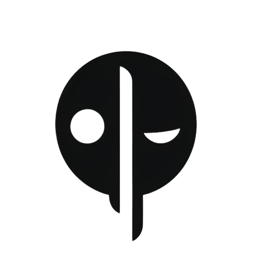

что это · инструменты · ключи · проверка · готовность
папка, которая помнит продукт: контекст, правила, роли, инструменты, скиллы, проверки, гейты, дизайн и агенты. агенты работают внутри неё, каждый шаг – файл и коммит. собрана из разборов Кумара, Урбана и Булаева, анкет участников и контент-машины команды.
Demo – сборка из пустой папки за десять фаз. Local – локальное хранение: твоя папка на этом компьютере, правка, агенты, сессии, откат. Team – рабочая папка спринта из git, видна всей команде.
движок и набор: ai-mindset-org/marketing-harness (~/harness-engine). рабочая папка спринта: ai-mindset-org/marketing-harness-sprint (~/harness/marketing-sprint). оба приватные, доступ – через оргу ai-mindset-org.
Александр Поваляев – харнесс и воркшоп 01.10; Саша Васильев – сервер команды, Team и Сотник; Анка Ставенски – дизайн-система; Миша Яценко – голос и LinkedIn. как всё устроено по шагам: Guide.
для первого часа ключи не нужны: хватает Claude Code и папки. остальное подключается по одному, когда появилась задача. ключ живёт только на твоём компьютере, в папку и в git попадает имя переменной.
клик по строке открывает карточку инструмента из набора: зачем, где включить, проверка, цена и границы.
echo 'export EXA_API_KEY=<ключ>' >> ~/.zshrc
source ~/.zshrcновый терминал видит ключ; Claude Code и MCP подхватывают его при запуске.
security add-generic-password -s EXA_API_KEY -a "$USER" -w
# в ~/.zshrc:
export EXA_API_KEY="$(security find-generic-password -s EXA_API_KEY -w)"значение не лежит в файле открытым текстом.
.mcp.json с ${EXA_API_KEY} на месте ключа. перед push – gitleaks detect --no-git --source .. ключ, вставленный в чат, считается засвеченным: перевыпусти.
1 · Claude Code → 2 · Exa (ресёрч) → 3 · LMS (транскрипты занятий) → 4 · LinkedIn руками → дальше Gemini, Apify, Telegram по задаче.